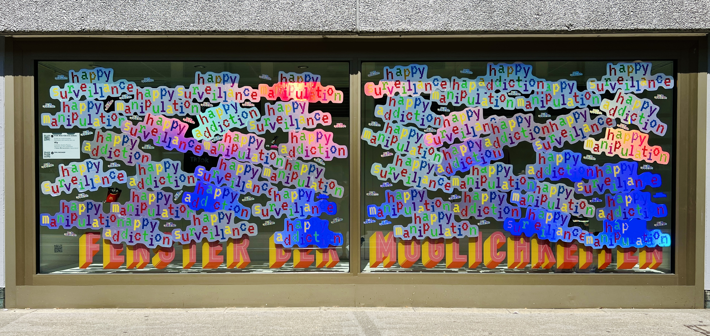

Digital technologies deliver convenience and happiness on demand — instantly, reliably, around the clock. With Happy Manipulation, t8y draws a parallel between the approach of tech corporations and the Happy Meal. Both are designed to address and exploit human needs. What emerges is dependency without coercion. We return voluntarily because it feels good, is easy, and requires little thought. In doing so, we unconsciously surrender ourselves to the control of corporations that are steadily growing more powerful.

Happy Manipulation installation, Fenster der Möglichkeiten